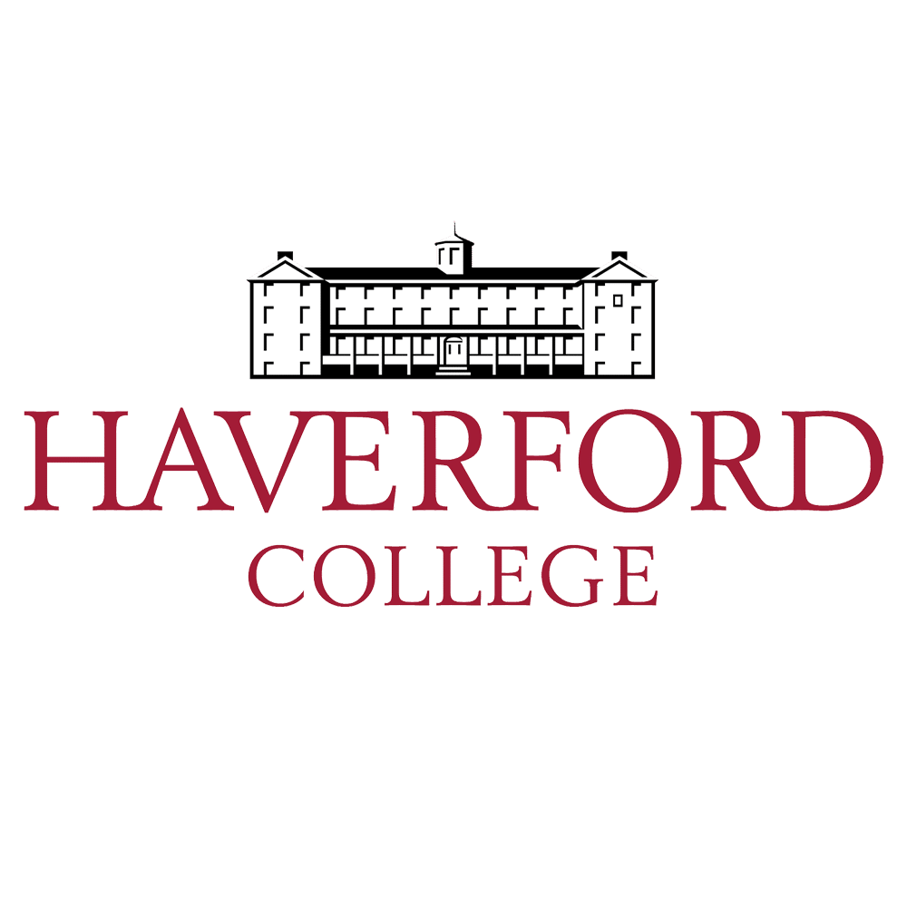
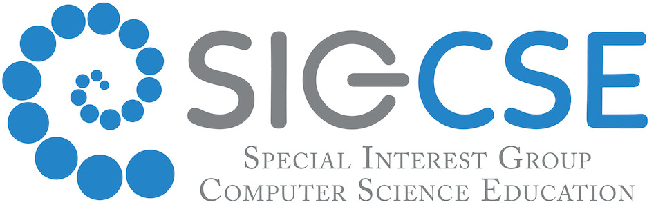
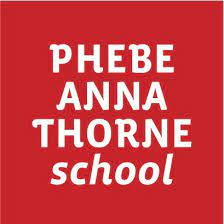

Institutions
-

Haverford College
Haverford, PA
2021-2025
Major: Computer Science
Minor: Psychology
-

Yonsei University
Seoul, South Korea
Spring 2024
Study Abroad Semester
Coursework
Data Structures, Discrete Mathematics, Linear Algebra, Data Science, Systems Programming,
Computer Organization, Analysis of Algorithms, Artificial Intellgience, Software Engineering, AI-Based Education Program

Student Researcher
May 2023 - Present | Remote
Conducted research on the impact of various assignment deadline policies in CS education under mentorship of professor
Chris Murphy.
Reviewed relevant literature, designed survey, and performed data analysis for 50+ participants.
First author for a paper that was accepted and will be presented at the ACM SIGCSE Technical Symposium 2024 .
Computer Science Teaching Assistant
September 2023 - January 2024 | Bryn Mawr, PA
Held weekly office hours to help students with problem sets in Discrete Mathematics.
Graded homework and helped teach concepts including, graph theory, induction, and writing proof.
Computer Science Teaching Assistant
September 2023 - January 2024 | Haverford, PA
Assisted in teaching introductory CS in Python, including recursion, function, debugging, and testing for 30+ students.
Present in class lecture to answer questions from students.
NLP Research Assistant
January 2023 - August 2023 | Haverford, PA
Scraped and cleaned Korean-English corpus of more than 1 million lines for NLP.
Built pipelines and programs to train Transformer-based MT models using Sockeye framework.
Evaluated the accuracy of models and enerated plots to represent key findins.
Computer Science Lab Monitor
August 2022 - December 2023 | Haverford, PA
Resolved technological difficulties for 50+ students taking Intro CS courses.
Supported students in developing and debugging Python and Java code.
Library Liaison
January 2022 - May 2023 | Haverford, PA
Assisted in student and faculty research through library catalog and databases.
Hosted workshops to train newly hired liaisons in research skills.
Worked with library staff to guide students to relevant course materials.

Classroom Aide
October 2021 - January 2024 | Haverford, PA
Supported in teaching kindergarten students Mathematics and English.
Helped supervise and engage students during recess and lunch time.